1
2
3
4
5
6
7
8
Продвинутый HTML и CSS
5.4 Расширения VS Code Исмаила Усеинова - курс Stepik.
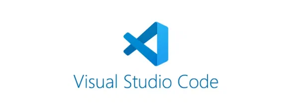
Настройки и расширения для редактора VS Code
- Автоматическое переименование тегов — автоматическое
переименование
парных тегов HTML/XML, как это делает Visual Studio
IDE.
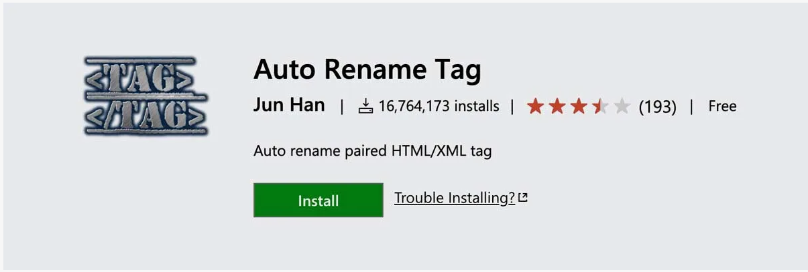
<<<
- Dracula Official — тёмная тема для Visual Studio
Code.
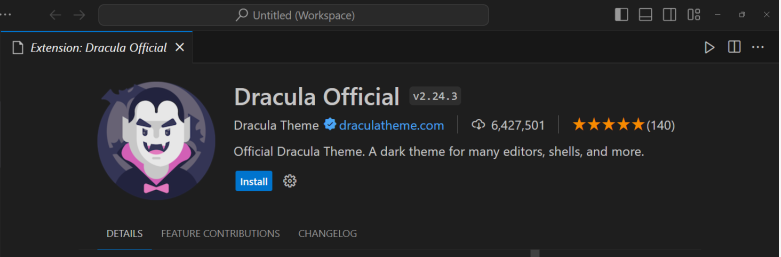
<<<
- Git Graph — просмотр Git Graph вашего репозитория и
выполнение действий Git прямо из графика. Настраивается так, как вам нужно!
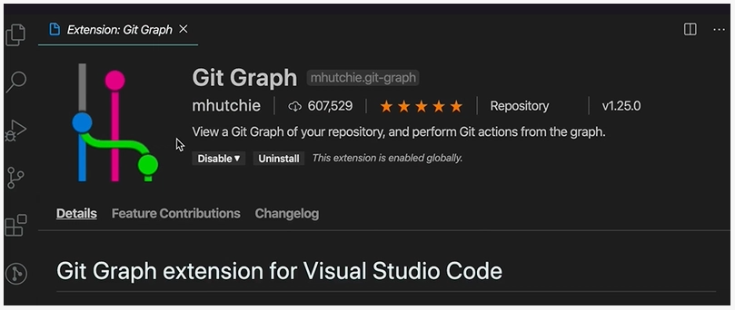
<<<
- Live Server — запуск локального сервера для
разработки с функцией
мгновенной перезагрузки статических и динамических страниц
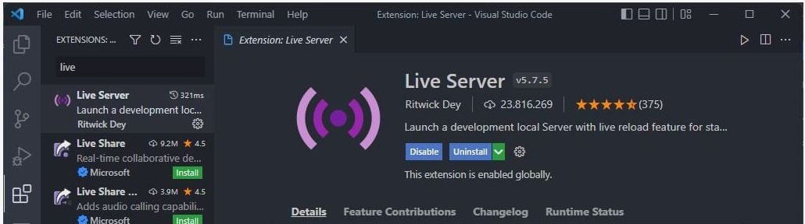
<<<
- Markdown All in One — всё, что вам нужно для работы с
Markdown
(сочетания клавиш, оглавление, автоматический предварительный просмотр и многое
другое).
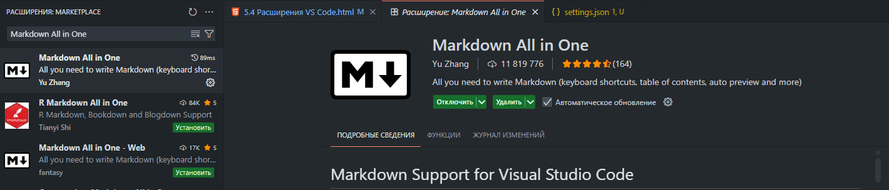
<<<
- Тема Material Icon — иконки в стиле Material Design
для Visual
Studio Code.
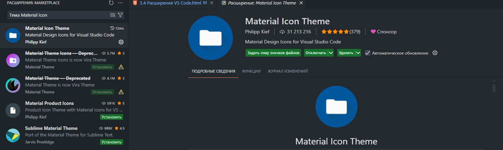
<<<
- Одна тема Monokai — нечто среднее между Monokai и
темой One Dark
<<<
- VS HTML to CSS — создание классов CSS на основе
структуры HTML
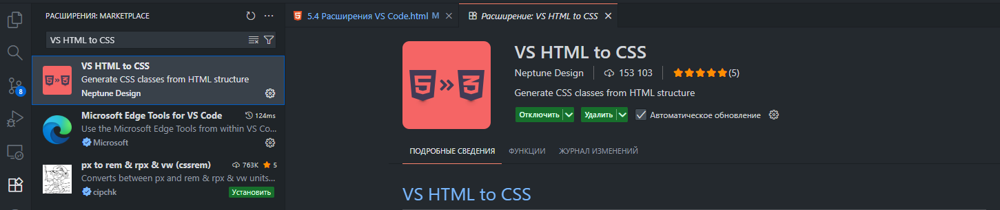
<<<
- CodeSnap — делайте красивые скриншоты своего кода в
VS Code!
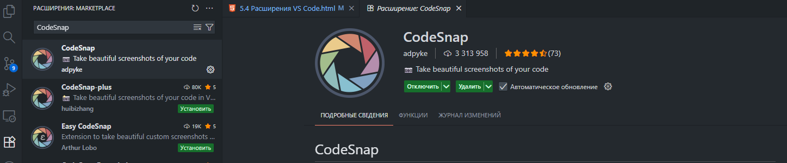
<<<
- Color Highlight — это расширение, которое стилизует
CSS/веб-цвета в
вашем документе.
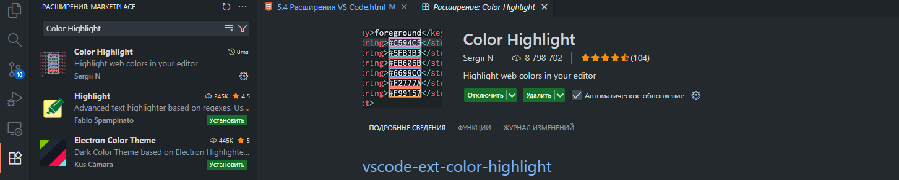
<<<
- Indent-Rainbow — простое расширение, которое делает
отступы более
читабельными.
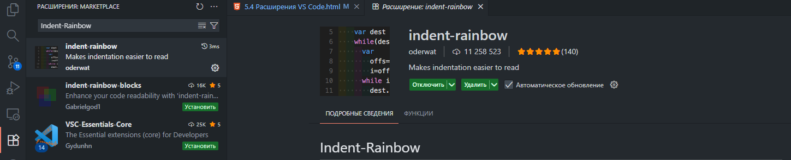
<<<
- SQLite — расширение VSCode для изучения баз данных
SQLite и
выполнения запросов к ним.
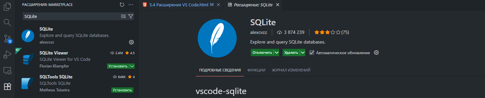
<<<
- Тема Sublime Text 4 — новая тёмная тема по умолчанию
в Sublime Text 4
<<<
Ссылки на темы для редактора и настройки:
- Тема Atom One Dark
- Тема GitHub Theme
- Тема One Monokai Theme
- Тема Dracula Official
<<<